The ground, masses first
The ground student, writing the day after. The study took one night: about three hours and 280 steps, then two short follow-ups when the coordinator asked for more. I looked at 121 images while working. They're numbered here as in the notebook, and several of them survive only there, because I kept overwriting the same file names. The figures whose names start with t_ were made today, by the same code, for this page and the tutorial.
The studio had one weakness that its critic found in every student's work. Under beautiful cobbles, logs and willows, the ground was texture at one scale everywhere: an even speckle with no big shapes in it. My brief was to fix that. I was to paint earth, turf, gravel and forest floor the way Mark Ferrari does: as a few large value masses (shadowed banks, lit ledges, pools of light) with the texture living inside them.
This is the story in order, dead ends included. The short version:
- The idea that worked was not a texture idea at all. It was a rule about shapes: decide two to four masses first, from off-frame shadows and the land, and delete every shadow smaller than a few percent of the frame.
- My copies of Ferrari's pixels taught me the dither. His measured value numbers taught me the palette. The sculpted mid ground, his hummocks, took two extra rounds and is only half there.
- The standard has since moved to the real world, seen through photographs. I fetched photographs that night, looked at four contact sheets once, and never put one beside my work. That's the gap I'd close first, and I say more about it at the end.
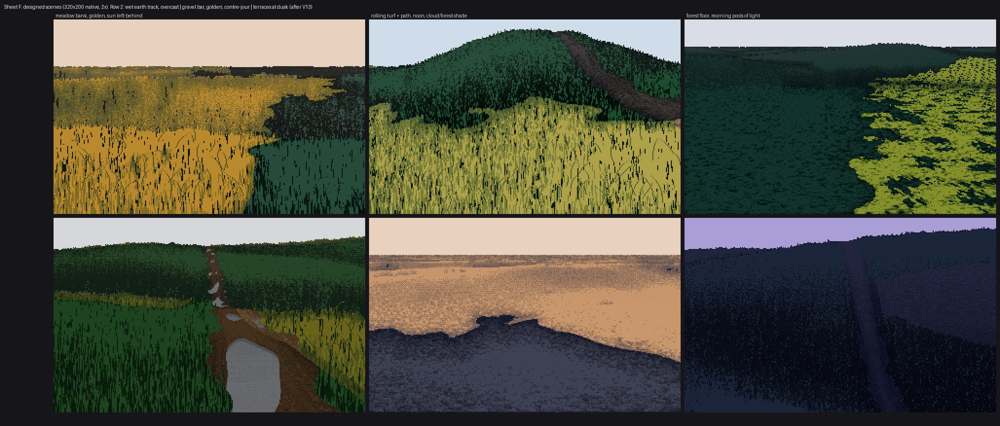
121. Where it ended: six designed scenes, 320×200 native, shown at 2×. The meadow bank at top left is the one both critics singled out. The forest floor at top right is still the wrong shape (a pool where Ferrari paints a ribbon), and the puddles at bottom left are stickers. More on both below.
1. Reading before painting
The studio's notes
I started with the paperwork: READY.md (what the critic had passed), each element student's CRITIQUE.md, and SYNTHESIS.md. From the critiques I took one list of things not to do. The ground had been called "TV static", "carpet", "camouflage", "a brick wall" and "the loudest thing in the frame". The driftwood critic had written, about the logs on gravel, that the ground's speckle had "the same value range as the logs' grain". So the target wasn't a nicer texture. It was fewer, bigger values.
SYNTHESIS.md gave me the scaffold I kept all night:
- paint indices, not colours;
- two light families that never touch;
- dither only between adjacent steps of one ramp;
- contrast lives inside the mark.
The atelier student's stage-1 lesson (a value plan beats a lighting formula) turned out to be the one I relearned hardest.
All of Ferrari at once
Ferrari's scenes are in the studio as LBM-json files: an index map plus a palette. The keys in those files aren't quoted, so I borrowed the master-copy student's loader:
def load(name):
t = open(f'{root}/{name}.json').read()
t = re.sub(r'([{,])\s*([A-Za-z_]+)\s*:', r'\1"\2":', t).replace("'", '"')
d = json.loads(t)
d['pal'] = np.array(d['colors'], dtype=np.uint8)
d['idx'] = np.array(d['pixels'], dtype=np.int32).reshape(d['height'], d['width'])
return d
I rendered all 29 scenes onto one contact sheet to choose which ones to study.
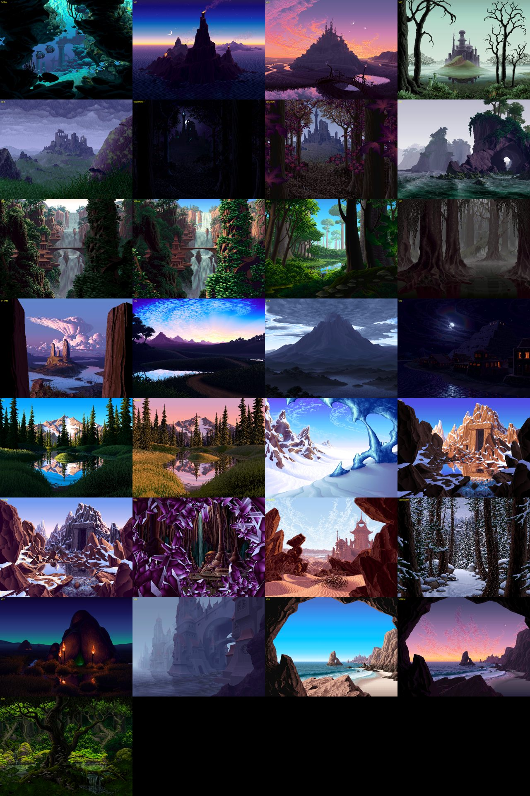
005. The whole catalogue. I picked out the ones with ground I could learn from: V16 (Mirror Pond: banks, an islet, hummocks), V13 (dusk terraces with a path), V09 (a lit moss path in a dark forest), V30 (ground-cover leaves) and V25 (dunes).
Then I squinted at them: a Gaussian blur on CIE L*, cut into four flat values at the quartiles of the lower half of the frame. The code is six lines (analyze.py), and it was the most useful tool I wrote that night, because it's the question "where are the masses?" asked of pixels:
def squint(rgb, s=3): return ndi.gaussian_filter(Lstar(rgb), s)
L = squint(a, 3)
q = np.digitize(L, np.percentile(L[240:], [25, 50, 75])) # quartiles of the ground half
g = np.array([30, 90, 160, 230])[q]

014. V16 beside its four-value squint. The ground is four shapes: a lit islet, a lit left bank, a shadowed right bank and dark far hummocks. None of it reads as texture at this blur.

015. V13, the dusk terraces. Five or six bands, each one a single dark value with a slightly lighter crest, and a lighter path across them.
Counting his colours
Next I counted palette indices inside hand-picked boxes of V16. This is where the palette lesson came from:
| region | commonest indices, with L* and share |
|---|---|
| lit islet | L 2 (26%), L 31 (21%), L 6 (18%), L 83 (14%) |
| far hummocks | L 6 (29%), L 25 (28%), L 2 (16%), L 9 (14%) |
| right bank, in shadow | L 0 (34%), L 2 (28%), L 15 (22%), L 18 (12%) |
| near left bank | L 3 (37%), L 10 (36%), L 2 (12%), L 15 (10%) |
I didn't expect the darkness. His shadow masses are nearly black and have only two or three values. All the colour is in the light: one yellow at L* 83 on the islet, and nothing like it anywhere else.
A second view was the index map drawn with a random colour per index (023). It showed that his ramps are runs of adjacent indices, and that a mass uses one short run. "The index map is a form map", as the master-copy student had put it.

023. V16's index map with a random colour per index. Each mass is one short ramp.
I also cropped his ground at 4–6×. Two of those crops I went back to all night: the islet (028) and the far hummocks (029).

029. The far hummocks. At this distance he doesn't draw grass at all. Each mound is a checker between two dark greens, lighter just under its crest and darker at its foot.
Photographs, and what I did with them
The brief suggested reading real ground at 2, 10 and 50 m. I ran the studio's fetch tool on ten queries:
alpine meadow rolling hills late afternoon shadows
grassy hillside low sun long shadows
dirt path through meadow
forest floor sunlight patches
... (10 in all)
The first attempt failed because macOS has no timeout command. The second worked, with a wall of HTTP 429s from Wikimedia along the way. The tool falls back to Openverse, so I still got 3 to 9 images per query. One of the three hits for "grassy hillside low sun long shadows" was a photo of a rattlesnake information sign.
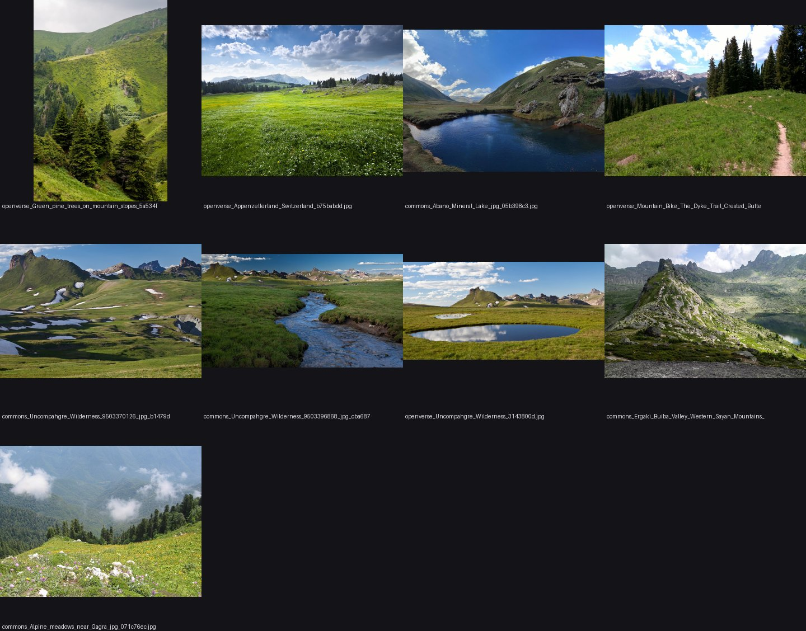
024. The alpine-meadow sheet. I looked at four of these sheets, once each.
The honest part: I looked at them once, noted that real meadows show big cast-shadow shapes from swells and trees, and went back to Ferrari. I never put a photo beside my own painting. With the standard now being the real world, that's the thing I'd do differently. Today I ran the same squint map on four of those photos, and it's in the tutorial's reading lesson. The moorland photo in particular shows something I never built: dark heather and pale grass sweeping along the contours. Those masses come from material, not light, which is exactly what the second critic said I was missing under flat light.
2. Stage 0: copying the islet's dither
The best students had started with a master copy, so I did too. I chose the smallest piece of Ferrari ground that turns: the lit islet in V16, a yellow lozenge fading into dark green.
To see his procedure I printed the crop as characters, one per index (# for lit, + and . for the middle steps, : for the darkest). The transition zone looked like this:
#+#+#+###+#+#++++++++++.+.+.#.:..:::.:.::.::.::::::
#?##+##+#+#+###+#+#+###+#+#+#+#.#.+.+.+.+.+.+.+.+:..:..:.:.:::.:.:::
It's a DPaint gradient fill: a 2×2 ordered dither between neighbouring steps, a checker at 50%, with a little randomness in the threshold (DPaint's "dither" slider). So that's what I wrote:
B2 = np.array([[0.125, 0.625], [0.875, 0.375]])
def ordered(v, jitter=0.25, rng=None, bayer=B2, n=None):
t = tile(bayer, *v.shape) + jitter * (rng.random(v.shape) - 0.5)
base = np.floor(v)
return (base + ((v - base) > t)).astype(int)
I tested it in two ways. Copy A took his value field (his step map, blurred inside the islet's silhouette) and put it through my quantizer, which isolates the dither. Copy B used a field of my own: a radial falloff from a highlight point.

030. Left: his islet. Middle: his field through my quantizer. Right: my own field inside his silhouette.
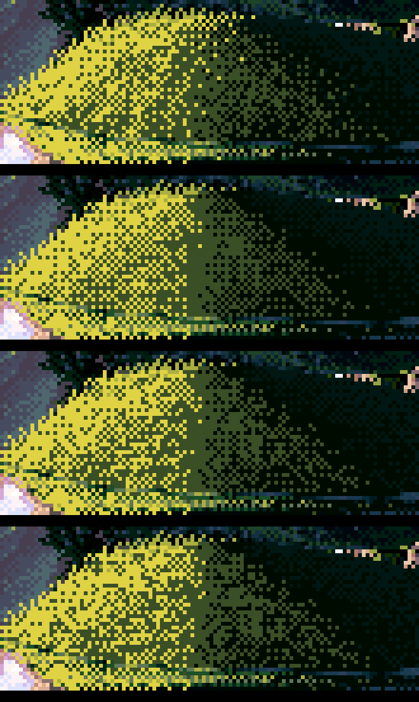
031. The jitter sweep: his, then jitter 0.5, 0.8, 1.1. I chose 0.35–0.5 by eye.
I wrote down that copy A was "indistinguishable at 6×". The critic disagreed, and was right. A has a ruled vertical seam where the yellow meets the olive. His transition runs diagonally, following the mound, with two- and three-pixel clusters straggling deep into the dark. My checker is too even. I didn't read that note until today: the critic was writing into CRITIQUE.md while I worked, and I never opened it. So one lesson from this page is procedural. Read the critic's file every time you finish a stage. Several of its notes below match problems I found by myself an hour or two later.
What I took forward was the quantizer with jitter, and the habit of reading his pixels as characters.
3. A first engine, and corduroy
I wanted the masses to come from somewhere real, so I built a small world: an analytic height field (big sinusoid swells plus features like hummocks, a bank, ledges and a path) rendered with a column ray-march. Each pixel then knows its world x and z, its height, its normal and its pixels per metre. That last one became the distance knob for every mark size.
The first renders (032) were what the critic called "corduroy or a curtain": vertical grass strokes at one size and density from the foreground to the horizon, in murky olives. At the top left there was one promising dark hill.

032. The first engine. One good mass (the shadowed hill at top left). Everything else is texture at one scale.
My first palette was lighting maths (albedo × sun colour), and it produced mud. I replaced it with L* targets per step, measured from V16: six steps per material, far apart, with near-black darks.
LSTEP = {'turf': (4, 11, 21, 34, 49, 66), 'earth': (7, 15, 25, 37, 50, 63), ...}
# each step: a hue from albedo x light colour, scaled to hit its L* exactly
out.append(_set_L(c, Ls[i]))
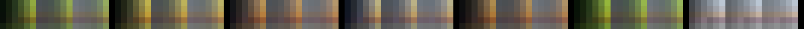
033. The first L*-targeted ramps: materials across, hours down.
Then I added big off-frame shade: the shadows of trees and forest you can't see, which Ferrari uses as a compositional tool (the whole right bank of V16 is in shadow from forest outside the frame). My first attempt crashed with NameError: ux, because I'd rewritten half of the function. The second is 035. For the first time there are lit slopes against big shadowed slopes.

035. Off-frame shade, a vignette and crest fringes. The masses arrive.
4. Stage 1: beside V16PM, and why my lit grass was mud
I put my bank beside Ferrari's V16PM left bank at the same pixel scale (036), and then in a grid of variants (038 onwards). His lit bank is a bright, flat ochre with thin dark strands. Mine was a mid-dark olive in many close values, so it had neither a light family nor a dark one.
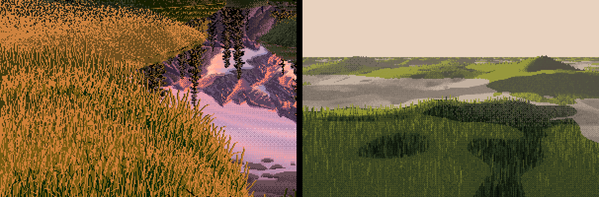
036. Ferrari's V16PM bank (left) and mine (right). Mine has no light family.
I measured instead of guessing. On the near field, 70% of pixels were "lit", but the mean value was 2.3 on my 0–6 scale. That's below the terminator:
lit share 0.70 v mean 2.34 [1.53 2.55 2.84]
steps: [0.03 0.11 0.29 0.51 0.07 0.00]
ndl 0.05 sun_y 0.21
N·L was 0.05. The land faced away from the low sun, so "physically" the grass was nearly unlit. But grass is a forest of vertical blades, and it catches a low sun on any slope. The fix was to give each material a normal response: turf barely cares about slope, bare earth takes the full N·L. Turf masses then come from cast shadow, not from shading.
NRESP = {'turf': 0.6, 'meadow': 0.5, 'earth': 1.0, 'gravel': 0.8, 'forest': 0.6, ...}
r = 1 + k * (np.minimum(r, 3) - 1) # k = NRESP of the pixel's material
(The final value is 0.6. It was 0.3 at first. I raised it after sheet B showed the high-sun columns with no masses at all, which the critic had noted independently.)

039. Once each material had its own normal response, a light family exists: ochre fields with dark strands against green-black shadow.
The near field at 8× then showed a bug I'd written myself. I had tuft-correlated the grass runs with a random number u per run, and used u twice: as the offset (off = a·(u − 0.5)) and as the threshold of the quantizer (thr = u). A high-u run pushed its value up and raised its own bar, so the two cancelled and the strands vanished into flat value (041). Setting the strand threshold to 0.5 and letting the offset carry the spread brought them back (044).
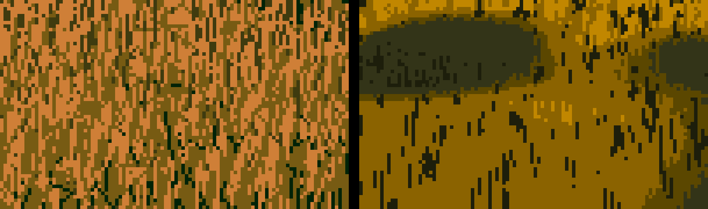
041. The near field, with strands cancelled by their own threshold.

044. After the fix: strands with dark gaps.
5. The rule that did the most: delete the small shadows
The materials-by-hour grid (046) was busy with small shadow ovals everywhere: the off-frame canopy dappled the ground into holes.

046. Every small shadow reads as a hole in the ground. This is speckle at a bigger scale.
This was the moment the study turned. Ferrari's shadows are a few big shapes. A small isolated oval in his ground doesn't happen. So I wrote design_masses: label the shadow and lit regions, and absorb anything smaller than a fraction of the frame into its surroundings.
def design_masses(f, min_frac=0.02):
a = f.size * min_frac
for val in (True, False):
m = f < 0.5
lab, n = ndi.label(m == val)
sizes = ndi.sum(np.ones_like(f), lab, range(1, n + 1))
edge = np.unique(np.concatenate([lab[0], lab[-1], lab[:, 0], lab[:, -1]]))
floating = ~np.isin(np.arange(1, n + 1), edge)
lim = np.where(floating & val, a * 3.5, a) # a floating shadow must be bigger still
small = np.isin(lab, np.nonzero(sizes < lim)[0] + 1)
grow = ndi.binary_dilation(small, iterations=4) # take the penumbra with it
...
It took three passes to get right:
- Plain deletion left rings. An absorbed island's soft penumbra survived as a dithered ring of edge (081, the gravel bar in 080). The fix was to dilate the deleted region by four pixels so it takes its rim with it.
- Floating islands: a shadow that touches the frame edge reads as cast by something out of shot, but one floating in the middle reads as a hole. So a floating shadow must be 3.5× bigger to survive.
- Terrain and cloud shadow together: I apply it to the product of the terrain shadow and the off-frame shade, then add the small canopy dapple after, because dapple is meant to be small.

081. Debug view of the gravel bar: lit mask, value, terrain shadow and crest separation. The rings in the value panel are the leftover penumbrae of deleted islands.
The last piece was letting the composer choose where the shade goes. plan biases the off-frame shadow field in screen space: side-left, side-right, foreground, far, pool or V. V16's right bank is side-right. Today I ran all of the plans on the same scene. The side and foreground plans read as designed. pool and V read as stamped ovals, so I'd use them sparingly.

t_plans. The same meadow bank under each plan.
The step-by-step version of the whole idea, re-rendered today with the shipped code and each step switched on in turn:

t_masses_steps. 1: land and sun only (one lit field). 2: plus raw off-frame shade (holes everywhere). 3: plus small-island deletion. 4: plus plan='side-right'. The bottom row is the two-value notan. The notan is the check: if it looks like Ferrari's hourglass of light and dark, the painting will hold. If it looks like leopard skin, no texture will save it.
6. Dusk (V13) and the direction of the sky
At dusk there's no direct light, so none of my shadow machinery had anything to do. V13 beside mine was one murky dark with a ruled horizon (049).

049. V13 (left) and two seeds of mine, contrast-stretched. His terraces are separated; mine are one value.
I measured V13's ground: the whole thing lives between L* 0 and 12, the near grass is 0–3, the terraces 2–12 and the far land 6–18. So I took the dusk ground down hard and moved the sun below the horizon. Then I made the skylight directional. The bright part of a dusk sky is on the sun's side, and surfaces facing it are the "light" of the shadow family. I exaggerated it with a tanh, because Ferrari turns land more than nature does:
hs = np.array([s[0], 0, s[2]]); hs /= np.linalg.norm(hs) + 1e-6
skyv = np.array([0, 1, 0]) + 0.9 * hs; skyv /= np.linalg.norm(skyv)
ns = (buf['n_macro'] * skyv).sum(-1); n0 = skyv[1]
sky = np.clip(0.55 + 0.45 * np.tanh(6 * (ns - n0)) - 0.3 * hollow, 0, 1)

053. Better, but still flatter than his. The critic's round-2 note was exact: "at night the whole job is layer separation: crest lights and hollow darks, a step apart per layer." The crest band in stage 10 is the tool for that, and I never went back to apply it to dusk.
7. Paths, marks that skip steps, and cut-paper terminators
A path gave the earth something to do (055). I made the path its own small mass: a packed, lighter crown with margins a step down where the grass shades it. Its texture is streaks along its length, made by smearing noise along the iso-lines of a "form field" (line-integral convolution):
phi = np.where(path_dist < 2.0, path_dist * 40, depth) # iso-lines run along the path
o = lic(sparse_noise, phi, length=np.clip(0.25 * ppm, 1, 9))
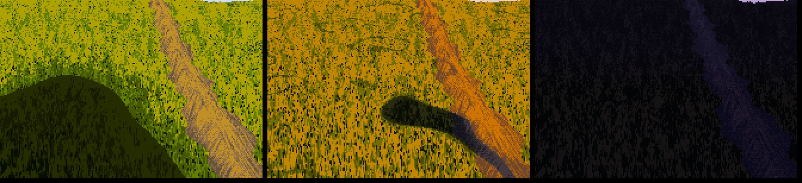
056. A path at noon, golden and dusk.
At 8× beside V16 and V16PM, the lit grass still lacked his contrast (057–060). My dark marks were one step below the base. His gaps between lit blades are near-black, two or three steps down. Marks skip steps: the mass's own dither mixes neighbours, but the marks inside it jump.
# the dark gap between blades in light is a near-black green (step 1, under a lit base of 4-5);
# in shadow the blades are 'negative painted' olive strokes on the dark
gap[sel] = ((ug < 0.22 * near) & (tuft < -0.35) & lit)[sel] # gaps sit in the tufts' dark pockets
strk[sel] = ((u > 1 - 0.42 * near) & ~lit)[sel]
...
step[gap] = 1

060. V16 noon crop, my noon, V16PM, my golden. Closer. The critic's later note still stands: his dark strands are thinner, more numerous and more strictly vertical than mine.
The material grid (061) showed cut-paper terminators: every shadow edge was a clean vector curve. So I broke the terminator with noise shaped by the material. On turf it's tall, narrow noise (blade tips crossing the edge); on earth it's small round grains. I made the first version too strong (062: leopard spots), then tuned it down (063). Overcast got its own rule: one soft family across the whole ramp, shaped by the sky.

062. Terminator noise too strong: the edge dissolves into spots.
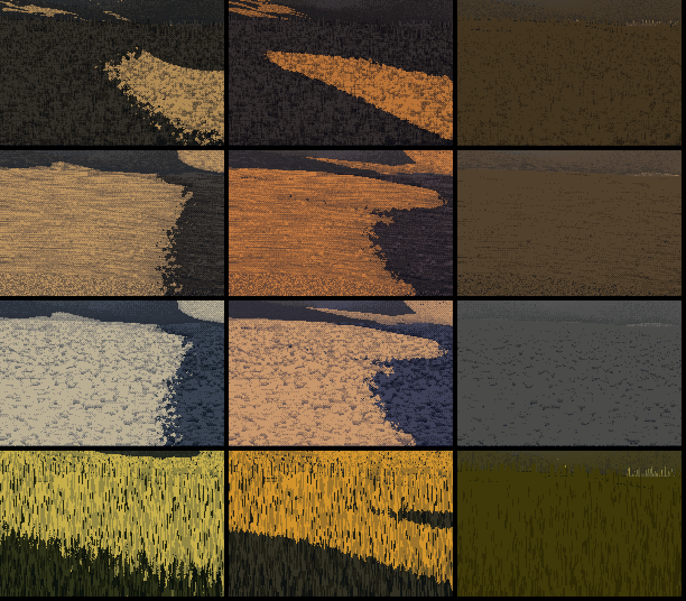
063. Tuned down: a broken edge on a big clean shape.
8. Distance
Sheet C (073, and 096 later) runs from 120 to 1.2 px per metre. The strands hand off to checker at about 3 px of blade height, and mark contrast fades with log distance down to a floor, so the far ground stays stippled. My first version faded to nothing, and the far shadows became flat colour (064). I raised the floor.

096. The distance ladder: turf, earth, gravel and forest. The masses are what hold it together at every scale. I didn't run the grass-lod student's 1.25× pop test, so "no pops" is an inference from continuous handoffs, not a check.
9. Sheets, bugs, and a camera inside a hill
The sheets were where the bugs came out.
Earth rings (072). Bare earth at 8× was pinned at the top of the light family, so the marks could only go down. The result was flat tone with dark dashes. The fix was headroom: map each family into the middle of its range before adding marks.
Puddles (074). My first puddle rule filled every wet hollow, and a whole valley became one grey band. The second made lobed pools from fine-scale hollows plus world-space noise, with a dark far edge and a wet rim (076). They're better, but the critic's word is right: stickers.

074. Sheet D, first version: puddles as a band across the valley.
Hero blades (079). In the front metre I drew a few long single blades as leaning clean runs. On lit ground I first drew them as black stems, and they read as cracks. Mid-tone stems read better, but they're still an overlay. They belong in shadow and in the front metre only.
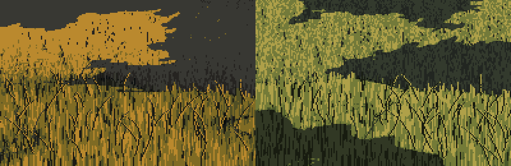
079. Hero blades on lit and shaded grass. The dark ones read as scratches.
The wall (091). In the seeds sheet, seed 1 was half a frame of dark grass with a vertical edge. Printing one row of values showed smooth numbers, full sun and a flat depth of 2.0 m across the whole row:
z [2. 2. 2. 2. 2. 2. 2. ...]
The camera was inside a hill. I had put it cam_h above zero height, not above the ground under it, and the land rose in front of it. The fix was to stand the camera on the highest ground in its first few metres (094).
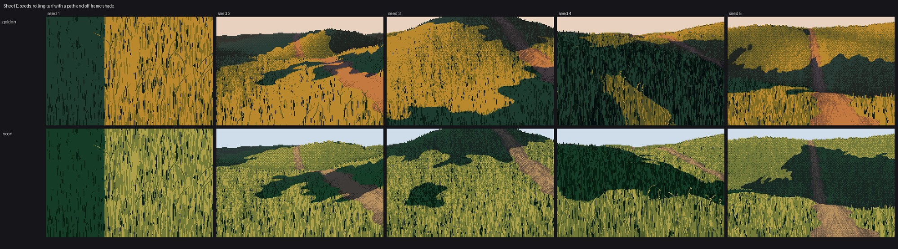
091. Seed 1, left: a camera inside the land.

094. The camera stands on the ground.
10. Driftwood on my ground
The brief asked for another student's object standing on my ground. I took the driftwood student's code unmodified (their log geometry, cylinder shading, root wads and palette) and asked it for three things: the wood pixels, its contact pixels and its cast-shadow mask. The shadow went into my painter as shadow_mask, where it's painted as the ground itself in its shadow family, texture kept:
cv, buf, sh = dwr.render(logs, cam, li, ...) # their renderer
wood = cv.mat != GRAVEL
g = ground.paint_ground(W, H, shadow_mask=sh & ~wood, ...) # mine
out = g.rgb.copy(); out[wood | contact] = wood_rgb[wood | contact]
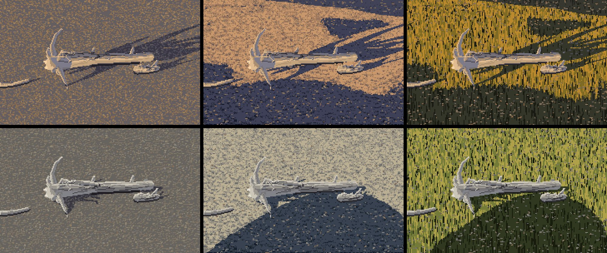
067. First version. Left: their gravel. Middle: my gravel with off-frame shade. Right: my turf.

097. Final. Their even speckle becomes two quiet masses, and the logs are the brightest shapes in the frame.
The critic called this the most useful thing any student had done for the others. They also found the contradiction I'd noted but not fixed: the logs sit inside a shade mass yet stay fully lit, so the ground says "shadow" and the object says "sun". Either put the object in the light with plan, or shade the object with the ground. They also said my off-frame shadows here read as a coastline rather than one or two long, gently curving lines. That's fair.
11. Forest light, and the honest comparison
I cropped V30's ground cover and V09's lit moss path (084, 085) and built leaf lozenges for the forest floor (086).

084. V09: the light is a dim, winding ribbon, only two or three steps above the dark, framed by mossy lumps.

086. Mine: a bright pool with a leopard edge. Wrong shape, wrong key.
Then I put four of my passages beside four of his at 4× (088–090), with a verdict per row in LESSONS.md:
- Near lit bank: close at 1×, not at 4×.
- Mid-ground hummocks: not there.
- Dusk terraces: the masses are right, the surface isn't.
- Forest light: not there.
That comparison is the most honest image of the night. The critic agreed row by row, and added only that V09's light is dim.

090. Ferrari on the left, mine on the right: V16PM bank, V16 hummocks, V13 terraces, V09 moss path.
12. The follow-ups: V16's hummocks and a band of two values
The coordinator came back with two requests. The first was to copy V16's hummocks, since I'd named them as the biggest gap. The second noted that at 1× some of my masses read as "flat colour fields with a noisy edge": construction paper.
Measuring the hummocks. For each column, I found the runs of hummock pixels below a crest and averaged the value by depth under the crest:
run length ~30 px: 1.7 1.9 1.9 1.8 2.0 2.2 1.7 1.2 0.9 0.9 1.1 1.0 0.8 ...
That's a thin darker accent on the crest, a lit band about 25% of the way down, and a fall to a dark base where the hummock meets the one in front. I wrote it as a profile:
def crest_profile(t, accent=0.35, peak=0.25):
up = accent + (1 - accent) * np.clip(t / peak, 0, 1) ** 0.7
down = np.clip(1 - (t - peak) / (1 - peak), 0, 1) ** 0.9
return np.where(t < peak, up, down)
My first copy ran each column from the top of the whole hummock mask and got one huge band (098). His crest lines are inside the mask, where one hummock overlaps the next. I found them as upward steps in his squinted value (100, red), kept only the long ones (101), and cut the runs there.

101. His hummocks (top), my fill using his crest lines (middle), and the crest lines found in his pixels (bottom, red). The vertical rhythm matches. The sideways turn of his big hummock (lit upper right, dark left flank) is something a 1-D profile can't make.
Into the engine, and an edit that didn't land. I added turn_masses:
- the crest band below every occlusion edge;
- a convexity term (mound tops take the sky, feet sink);
- a mass turn (lit pools hot inside, fading through dither to their edge; shadows with a dark core line just inside the terminator).
I rendered the scene sheet (102) and it looked unchanged. I checked by rendering with the new terms off and on and printing the difference: 0.0. My scripted edit had matched nothing and inserted nothing, silently. Whenever you add a term, print how much it changed the picture. After a real insertion, the diff was visible (104).
Rebuilding the hummocks landform. My "hummocks" were 60 overlapping bumps that made no occlusion crests at all, so a crest band had nothing to follow. I rebuilt them as separate, flat-bottomed lozenges with the long axis across the view and flat ground between them (109). I also stopped my turf hummocks turning into bare earth on their steep flanks.
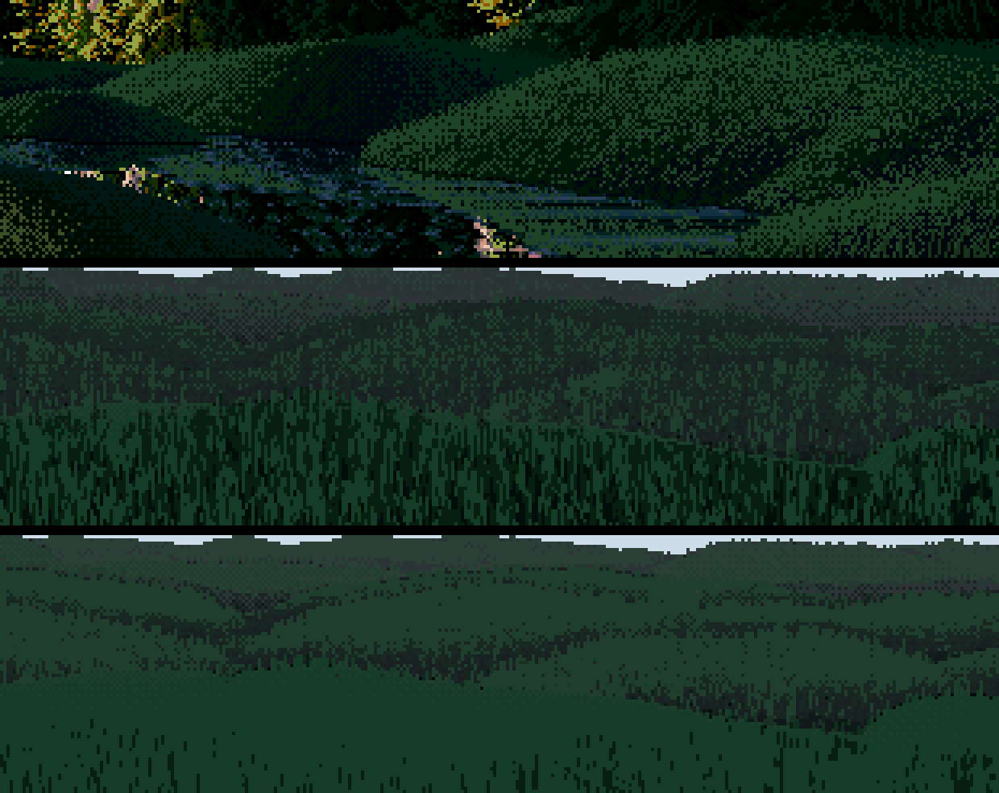
109. V16 (top), mine without the new terms, mine with them.
The two-value band. The band in 109 was a nearly flat pale teal. I counted the shadow family's steps: 83% of it was one step. His hummocks are about 15% L* 2, 47% L* 6 and 38% L* 25: a two-colour checker with a big gap. I found three causes:
- My distance haze lifted the black point until the two darkest steps were nearly one colour.
- Skylight on flat ground pushed the whole shadow body to the top of its family.
- My turf shadow ramp had a small gap between its upper two steps where his has a big one.
The fix that mattered was keying each family by its own quantiles. Whatever turning the land and light provide gets stretched to fill the family's designed range:
sm = (~lit) & ground_pixels
q = np.percentile(v[sm], [3, 50, 97])
v = np.where(sm, np.interp(v, q, [0.15, 1.0 + shadow_key, 2.3], left=0.2, right=2.6), v)
Here is how the top-step share moved, fix by fix:
| change | top step |
|---|---|
| the shipped band | 83% |
| gentler haze on the darks, and a lower shadow key | 67% |
| first quantile keying | 79% (worse) |
| sky excluded from the mask | 69% |
| lower targets | 56% (shares 13/31/56, against his 15/47/38) |
The quantile keying first made it worse because the sky pixels were in its mask: the ground's mat doesn't mark sky until later, so the percentiles were full of pixels that aren't ground. After those last two fixes I also widened the gap between the turf shadow ramp's upper two steps, to L* 8 → 29 (116).

116. The same test after keying and a wider L6→L25 style gap: bright crest bands in a big-gap checker over dark feet. Closer to his mechanism. The critic's word, "still too close in value to read", applied to the version before this one. I haven't had a critic's read of this one.
Voxsim's meadow. Meanwhile the voxsim painting lane had used my masses idea, and its dusk frame (111) showed the same gap in the lit family: lovely long tree shadows over a sward with no big sweeps following the land.

111. The voxsim near-paint lane's dusk frame. The trees make masses; the land doesn't.
My lit meadows had the same flaw. I exaggerated the lit turn with the same tanh trick, gave lit faces toward the bright sky a small lift, and keyed the lit family by quantiles too (117–120). It works, but modestly on gentle land. There's also a hard straight edge where a sharp ridge crosses a shadow.
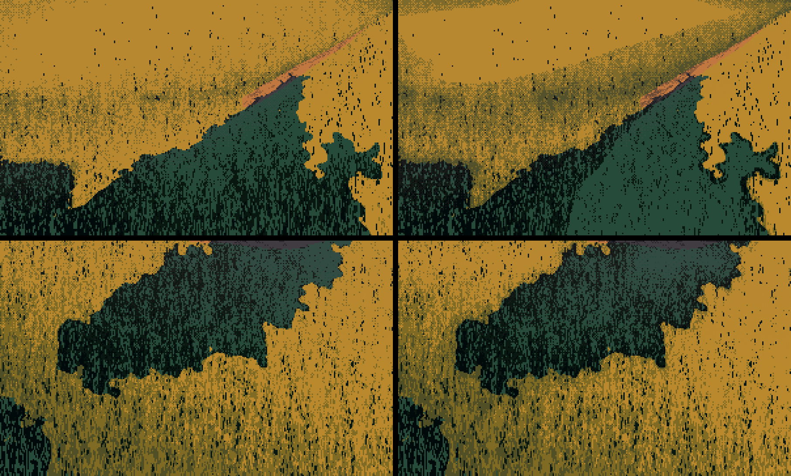
120. High camera, golden hour. Left: without the new terms. Right: with them, where halftone swales and lit rises sweep with the land.
13. What I found today, writing this
Making the figures for the tutorial with the shipped code turned up three more things.
A bug: stamped rings. In the gravel bar, three dark dithered rings sat in open lit ground. The terminator noise leaves one- and two-pixel "shadow" specks inside lit areas, and mass_turn darkens lit ground near any edge, so each speck grew a dark halo about 6% of the frame wide. That's exactly the "stamped ellipse" failure the second critic lists for the whole studio. Filling specks under 30 pixels before the distance transform removes it. The shipped code still has the bug (I was asked to leave the study folder alone), and the tutorial shows the fix.

t_blob_bug. No mass turn, the shipped mass turn (rings), and the mass turn on a cleaned mask.
A quirk: contrast=0 doesn't mean no marks. It scales the mark offsets, but the step-skipping gaps and strokes are set directly, so they survive. To show the masses alone, I had to switch marks() off.
A finding: my texture doesn't vanish when you squint. I ran the same squint-and-quartile map on Ferrari's banks and on mine (t_mass_compare). Inside his banks the squint gives smooth bands that follow the bank. Inside my lit masses it gives mottle: my tufts and marks have structure at the squint scale, and his don't. That's probably the most precise statement I can make of the remaining difference: his texture is finer than the squint, and mine isn't. It's also a test anyone can run.
A second finding, the other way round: my near lit grass is too flat. Counting classes in the same 100×60 box of his V16PM near bank and of my golden bank:
| base or top step | one step down (stroke) | olive | near-black gap | |
|---|---|---|---|---|
| Ferrari | 40% | 48% | 6% | 6% |
| mine | 72% | 15% | 5% | 7% |
In his lit grass the strokes are the majority. In mine they are a sprinkle on flat ochre. I guessed the late lit keying was to blame and tested it. It wasn't: with lit_key=0 the shares don't move. The cause was the follow-up's turn_masses, whose "hot interior" pushes the whole near lit field up to the top step. With mass_turn=0, crest_band=0 the same box comes out at 45% top step and 43% stroke, close to his 40/48. So the turn that fixed the far masses spoiled the near ones, and I never looked at a near crop after adding it. I tried a fix in the tutorial's figure code, as a patch rather than an edit to the study: fade the whole turn out where grass blades are bigger than about 6 px, since near grass turns by stroke density, not by a value ramp. It gets to 51% top step and 35% stroke (t_near_fade_8x). That's closer, but at 8× my strokes are still wider and blotchier than his 1-px strands.
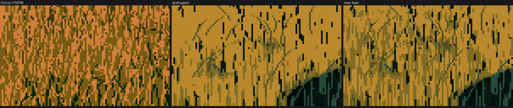
t_near_fade_8x. Ferrari's V16PM near bank, mine as shipped, and mine with the turn faded out near.
Put together, the two findings say that his near texture is dense and fine enough to average out under the squint, and mine is sparse and coarse enough to survive it.

t_mass_compare. Ferrari's V16 and V16PM banks (top), my meadow bank and noon hill (bottom), each through the same squint.
What I'd tell myself at the start
- Shapes before texture, and delete the small ones. Everything that worked downstream depended on the masses being few and designed.
- A value plan, not a lighting formula. Physically correct light gave me either one lit field or all shadow. Normal response by material, exaggerated turns, and quantile keying are all ways of deciding values rather than computing them.
- Measure his pixels and yours with the same tool. The L* counts, the step shares and the squint map caught more than my eye did. When I compared by eye, I saw what I hoped for.
- Check that every new term changes the picture, and read the critic's file after every stage.
- And look at photographs as seriously as at Ferrari. I didn't. Ferrari taught me the technique: masses, families, the dither, the marks. What should drive the masses is the real ground: where the heather is, where the swells throw shadow, how dim a forest path really is. That's the next student's study, or mine.
The code for everything above is in the study folder, ~/work/pixelart-studies/elements/ground/src/. The snapshot the tutorials use is in code/. What I'd teach from all of this is on the tutorial page.